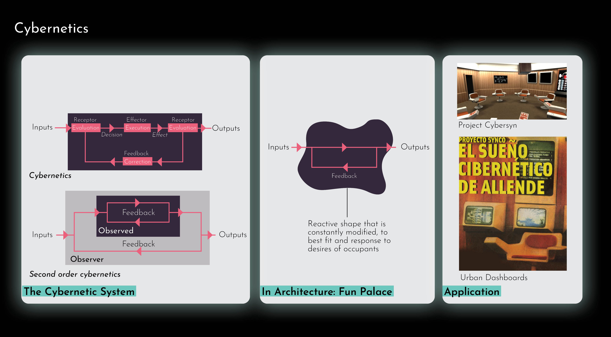
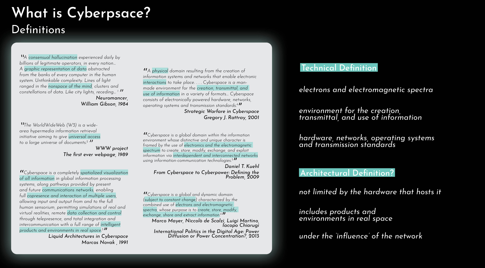
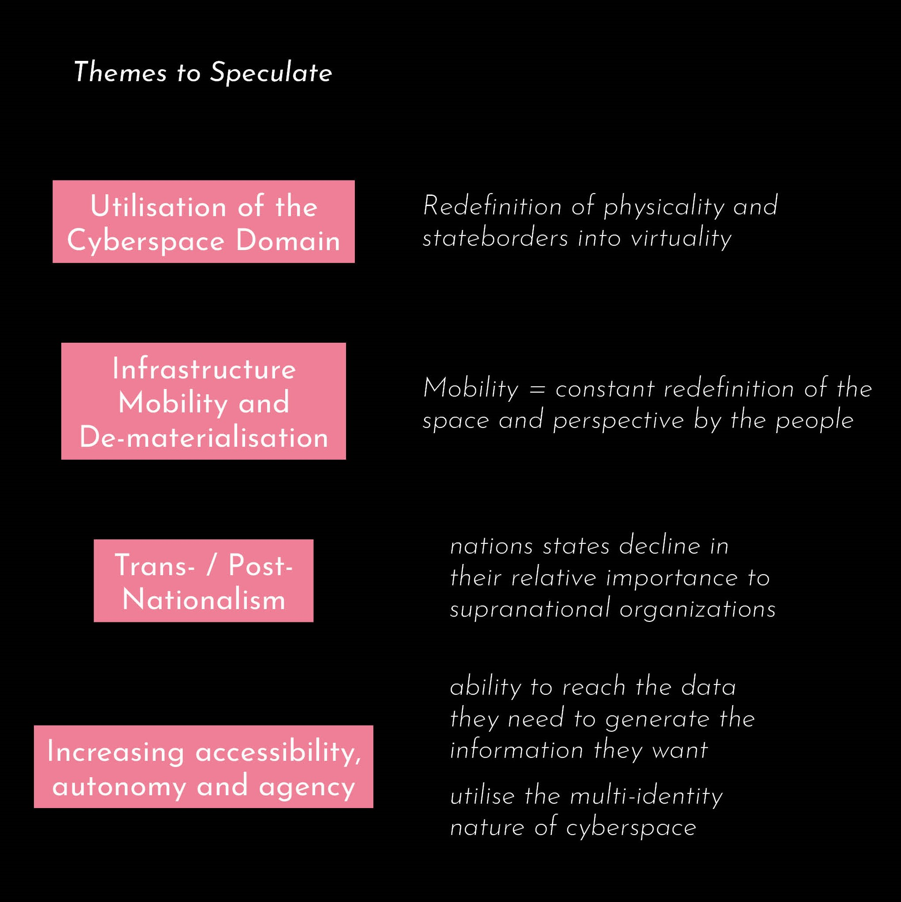

Singapore2075 - The Answer is Technology
Summary
This thesis seeks to speculate on the trend of unbridled technological implementation within our built environment, where the varied integration of and seemingly benevolent decisions made on technology in everyday lives may cumulate into an unstable and unsustainable future, without our realization of the consequences unleashed.Building on previous research on the hopes and pitfalls of today’s Smart Cities, three primary stakeholders are considered here: the people, the government, and corporate entities. Within this framework, the relationships and dynamics are investigated. Who has the ultimate control within the next generation smart city, and how truly smart are people in an inherently top-down smart city? How will data ownership, collection and surveillance tip the balance of power? Or will we be subjected to modular forms of control that penetrates throughout Deleuze’s Society of Control? Are Smart Cities merely facades of technocratic endeavours?
Through the use of fiction and worldbuilding, a series made of three acts invites discussions on the Internet-of-Things of today, caricaturing and challenging established dogma. Architecture performs as a character within, taken into context and hosting this uncanny future.
It presents a future Singapore that had been at the intersection of a divided line within a fragmented global economy, and as a result had sought to be the hub that connects decoupled giants and economic engines with starkly different modes of governance, beliefs and mechanisms.
(For more information, scroll down or refer to Issuu publication.)
About Me
Caleb is interested in the multi-disciplined nature of architecture in the medium to large scale, from project management and design compositions to intricate master planning, having been involved in small projects such as childcare centres and private houses, to medium and large scale projects in the healthcare, hospitality and sports typologies. He is strongly passionate in exploring the use of digital tools and mediums such as virtual production in order to communicate and ultimately realise visions. His pursuits in photography has informed his keen eye on composition, as well as an appreciation of the practical hard work, discipline, management and planning that goes on behind the scenes of every project.Name
Caleb See
Typology
Technology, Worldbuilding
Site Location
Singapore
Contact

![]()
![]()
![]()
![]()
A Study in Fiction
The National Cyberspace Agency
The narrative takes the position of the National Cyberspace Agency (NCA), a governmental statutory board that oversees the integration of virtual space into the physical Singapore and was established in 2045, having authority over cyberspace and its manifestation in society in the 2070s. Its goal is to shape Singapore to be a technologically advanced and compatible digital hub that connects the East and the West through investments in infrastructures of connectivity and by extension collaboration, thereby aligning with Singapore’s national agenda of being a neutral platform for all to engage in business and data transactions. The NCA will further address the challenge of the migration and administration of major parts of the economy and infrastructure into cyberspace.

The Plan
To achieve this goal, the NCA has to collaborate with different governmental agencies and ensure that Singapore and her residents are always at the cutting edge of technological implementation. The relentless pursuit of the latest and newest brings back into focus the different forms of technological solutionism and technocratic tendencies of today, impacting political, social, moral, economic and environmental aspects of cities.The Film
The Evolution of City and Machine
The Individual,
The Society,
and The Machine
The approach of city-making and its related theories have always been evolving. This section seeks to investigate the relationship between the stakeholders of the city through the lens of a systems designer in search of a logic within the urban, a convoluted and complex interconnection of people and space. Through such machinic interpretations of society, this thesis looks at how control is enacted over individuals within these systems.
This was especially true from the 1920s, as various architects and planners sought to reign in systemic disorganization and to impose a sense of order and structure in an increasingly industrialized urban setting. Within this setting, the approaches ranged from a top-down imposition of order and control, to the planning of no plans (which is to allow individuals to take control of their environments under a framework).
Many of these organizational principles borrowed ideas from ‘the Machine’, as planners sought out parallels between the complexity of machines and the intricacies of a living society, borrowing perceived organizational principles between the two fields.
The utopic visions visited here may not necessary present practical and straightforward solutions. However, by extracting principles of the era, we might be able to gain insights on rethinking cities and “smartness”.
Le Corbusier’s standardisation of the city and systematic categorization of human needs showcases his machinic vision, while Metabolism presented the city as an organism that grows and react.
Nobert Weiner and subsequently Cedric Price presented a cybernetic view of the city

While Christopher Alexander’s initial perspective of the city as a simple tree hierarchy shifted to a view of the city as a pattern language.
This thesis further delved into Deleluze’s Societies of control, investigating the relationship between the individual and the mass through the modulation of control and later on, together with Guattari, the decentralized rhizomatic framework that is commonly linked to the organization of the Internet or cyberspace today

Definitions
Our investigations into the current trends of ‘smart’ cities continues within cyberspace, or more specifically the increase in connectivity, prevalence of information systems and explosion of communication channels across this timeless, non-spatial domain. Besides its technical definition of hardware, electrons and networking, this thesis will like to adopt the definition as defined by Marcus Novak, in which cyberspace is not limited by the hardware that hosts it, and includes products and environments infused with cyberspace.Ambiguous Definitions
‘Cyberspace’ is a term without fixed definition, described through different terms depending on country, profession, context and time. These contexts can range from fictional narratives (Gibson, 1984), architectural perspective (Novak, 1991), technical (WWW project, 1989) and most commonly, in defence in relation to cybersecurity and national threats (Rattray, 2001)(Kuehl, 2009).The implication of most of these definitions seems to imply the fact that this ‘domain’ is a multi-dimensional space. It is at once physical and virtual. It is located within physical electronic hardware, embodied within the flow data transmission, of electrons and radio-waves. Yet, these flow of bits and bytes would only form cyberspace if there is a transfer of information, which locates cyberspace within a digital, intangible knowledge space.
Within architecture and urban design however, definitions of cyberspace seem to extend beyond the previous technical definition of cyberspace into space not only limited by the hardware that hosts it. According to Novak (1991), it includes ‘products and environments in real space’, taking the physical shape of spaces under the ‘influence’ of the network. Moreover, the degree of this ‘influence’ varies, and is categorized by Yehuda E. Kalay and John Marx (2001) into four degrees of influence as shown in Fig. 29.
Cyberspace is heterogenous, differing in realism from hyper-reality to hyper-virtuality.
By further delving into the properties of cyberspace, such as the fluidity of identity, form and space, as well as the reality of freedom within it, this properties will form a basis upon which we can evaluate the technology-infused cities of today.
An Investigation on 'Smart' Cities
A world cloud formed by the collation of 50 different smart city visions and goals.Many of these cities champion visions of being digital, efficient, economically attractive and data driven, while seemingly missing out the key piece of the city, the citizens themselves. The world cloud (right of text) formed by the collation of 50 different smart city visions and goals serves as a quick overview of what the world thinks of as a smart city today.
The main bulk of “smart” cities that ever existed are brownfield cities, where ICT networks and the Internet of Things are retrofitted into the existing cities. The EU holds the most number of oldest “smart” cities, while cities in developing countries such as India have rapidly been deploying technology in recent years.
We also see an accelerating number of new greenfield smart cities in recent decades. Some fail to complete, while others remain under construction far pass their original deadlines, or fail to attract actual residents.
The Debate on 'Smart' Cities
Despite the lack of a common and clear definition of ‘smart’ cities, it is generally agreed upon that initiatives within the drive for a ‘smart’ city may be broadly divided into 6 different dimensions. A broad overview of these categories (and goals) yields an image of a city designed for the citizen, satisfying needs, providing conveniences and improving the condition of inhabitants within the city’s borders.However, although initiatives under the banner of the ‘smart’ city might be loosely marketed as being ‘for the benefit of the people’, many of these proposals place citizens as mute recipients of government and corporate ‘benevolence’. The notion of the “Smart City” today is inherently tangled with the state and private corporations; it is a political, as well as a capitalist process. The growth of a smart city today cannot escape discussions on economic viability through private and public investments. Besides masquerading as a profit-generating apparatus, the smart cities of today serve as statement pieces of both developed and undeveloped nations. Countries do not even need to have an actual, functioning smart city, just the promise of one elevates its status as a developing nation, promoting its status as open for trade and propagating its growth. (Kigali, Rwanda as an example, though heavy with historical baggage, pushes its capital city as a growing node in the African continent.) It is a political soft-power tool to improve a country’s standing on the international stage.
Framing the Argument
There is therefore a need to speculate on an alternative form of smart cities, by reframing the relationship between physical and cyberspace.This section evaluates the lessons that could be extracted from the previous observations and analysis of the smart city. This would be done through the categorization of the issues that are brought about from the emergence of the smart city trend, and in doing so, reveal the implications and power dynamics that lie within grand visions, strategies and projections. Ultimately, it debates the entrenched model of the smart city we have today, in hopes of sparking a discourse on the current state of the ‘smart’ city and the road ahead.

Main Issue 1 - Who has the control and power?
Firstly, the universality of connectivity has led to a trend of power devolution, with a downwards transference of power to from the state to city. Cities have become more prominent players on the global stage, fused together as massive urban archipelagos across cyberspace.As cities pander towards corporations, corporations with vested interest have taken over traditional governance and planning, turning cities into “sales destination” and business test-bed.
Furthermore, the intense data collection and surveillance of the smart city have brought up issues on privacy and data ownership. The fundamental issue here is control and power. Drawing on Deleuze’s Society’s of Control.
We see modular forms of control that penetrates every aspect of society, enforced in the pervasive requirement of digital services and technology that are essential for an individual to maintain economic functions and societal relations. The ownership of data therefore represents the instrument of control. And in the current situation, they appear to be in the hands of a limited number of organizations, specifically corporations.
Main Issue 2 - Where are the people?
The second issue then is the position of people in cities of the future. The smart city at its core is a top-down imposition of control. A central organization decides what would bring about the most benefits to a city’s inhabitants after analysis of data presented to them.Moreover, the fundamental issue of a cybernetic smart city is the fact that cities are organic and informal beings – to reduce cities in to a set of rules and codes, meant to be debugged and rectified, is to blatantly discard the complexities and nuances formed between societal relationships.
Unplanned spontaneity, goes against the cybernetic theory, an anomaly in the system that is targeted to be eradicated.
Furthermore, the “smart” city in its current state is an exclusive city, benefiting the technologically-initiated. This results in an exacerbation of the social divide and polarization, in some cases visibly create gentrified enclaves while engaging in hidden social apartheid.
Smart city issues highlighted in this chapter further bear resemblance to the issues faced by cyberspace as discussed in previous chapters (“Properties of Cyberspace”). While envisioned as an egalitarian network in its early days, cyberspace has become increasingly vertical, with a handful of companies controlling the system, not dissimilar to the cities we see today. Citizens in cities and users in cyberspace are increasingly ‘sifted’ based on their profitability, and favoured accordingly. The organic and intangible aspects of the city such as social mobility seem to be outweighed by economic viability. Should such a biased and unforgiving city be the basis upon which the future city is built?

Firstly, by pushing the utilisation of the cyberspace domain, perhaps by redefining physical national borders and sovereignty.
Secondly, by dematerialising infrastructure, and redefining mobility such as in the case of Yona Friedman, in which mobility involves the constant redefinition of the space and perspective by the people
Next, to speculate this within a trans-national scenario, in which nations states have declined in their relative importance to supranational economic engines and organizations that transcend borders and physicality.
Lastly, by increasing citizen’s accessibility, autonomy and agency by giving them the ability to reach the data they need to generate the information they want, or to utilise the multi-identity nature of cyberspace.
Themes of Speculation
Firstly, by pushing the utilisation of the cyberspace domain, perhaps by redefining physical national borders and sovereignty.
Secondly, by dematerialising infrastructure, and redefining mobility such as in the case of Yona Friedman, in which mobility involves the constant redefinition of the space and perspective by the people
Next, to speculate this within a trans-national scenario, in which nations states have declined in their relative importance to supranational economic engines and organizations that transcend borders and physicality.
Lastly, by increasing citizen’s accessibility, autonomy and agency by giving them the ability to reach the data they need to generate the information they want, or to utilise the multi-identity nature of cyberspace.
Why Singapore?
An analysis of the South-East Asian region as well as the city-state of Singapore provides us with a deeper understanding of the intricacies of an Asian city in an advantageous geographical position, at the confluence of trade routes and communication infrastructures.
Furthermore, we see intense collaboration between our neighbours and ourselves around the region, providing many trans-national engagement opportunities on a lively international canvas.
The Woodlands Intervention
The Woodlands region looks to be a promising area for development, due to its connectivity within and without Singapore, as well as its unique blend in industrial, residential and international population.
A National Development Strategy?


What Future?
SmartNation Singapore
A collage of the varoious “Smart Nation” initiatives in the pipeline, planned by various governmental organizations and civil services in 2020 Singapore.
Most efforts in Singapore focus on security and safety aspects, deploying technology to improve monitoring and surveilance efficacy.
Film Themes
.jpg)
.jpg)
.jpg)
.jpg)
.jpg)
.jpg)
.jpg)
.jpg)
.jpg)
.jpg)